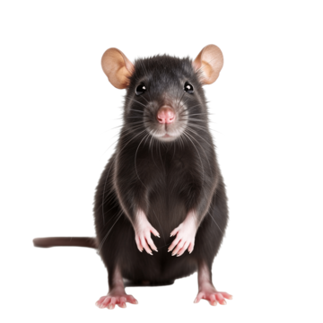
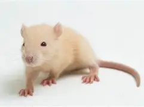
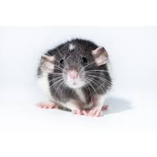

RATAS
-

Rata Noruega
Origen: Nativa del noreste de China y Siberia, se ha expandido globalmente gracias a la actividad humana.
Esperanza de vida:
1.5 a 2 años en libertad; hasta 4 años en cautiverio
Peso
Entre 270 y 580 g
Caracteristicas
Cuerpo robusto, hocico romo, orejas cortas, ojos pequeños. Cola sin pelo, más corta que el cuerpo. Excelente nadadora y excavadora. Omnívora: come desde frutas y granos hasta cartón y carne. Muy prolífica: hasta 12 camadas al año, con 6–14 crías por camada.
-

Rata negra
Asia tropical. Llegó a Europa en el siglo VIII y se expandió globalmente como especie comensal
Esperanza de vida:
1.5 a 3 años en cautiverio; menos de 18 meses en estado silvestre
Peso:
150–250 g
Caracteristicas:
Cuerpo delgado, hocico puntiagudo, orejas grandes. Cola larga, más que el cuerpo, con escamas visibles. Excelente trepadora, vive en techos y árboles. Omnívora: prefiere semillas, frutas, insectos. Históricamente asociada a la peste bubónica.
-

Rata domestica
Origen: Deriva de la rata noruega. Domesticada en Europa desde el siglo XIX para compañía y laboratorio
Esperanza de vida:
2 a 3 años; algunas viven hasta 4 años
Peso:
350–650 g según el sexo
Caracteristicas:
Inteligente, sociable, entrenable. Vive en jaulas con juguetes, túneles y materiales para roer. Necesita compañía de otras ratas. Ideal como mascota por su docilidad y curiosidad.
-

Rata albina
Origen: Deriva de la rata encapuchada japonesa, domesticada y luego cruzada en Europa y América
Esperanza de vida:
1.5–2 años
Peso
Similar a la rata noruega: 300–500 g
Caracteristicas
Pelaje: Blanco puro o crema pálido, sin pigmentación Ojos: Rojos o rosados, debido a la ausencia de melanina (se ven los vasos sanguíneos)
-

Rata dumbo
Origen: Criada en California, EE. UU., desde 1991; reconocida oficialmente en 1998
Esperanza de vida:
2 a 3 años
Peso:
Hasta 500 g
Caracteristicas:
Orejas grandes y redondeadas, ubicadas lateralmente. Cabeza más ancha, aspecto tierno. Sociable, juguetona, ideal como mascota. Requiere cuidados similares a otras ratas domésticas.
OSCAR MEDINA HERNANDEZ
3-D
Miercoles 17 / 09/ 2025